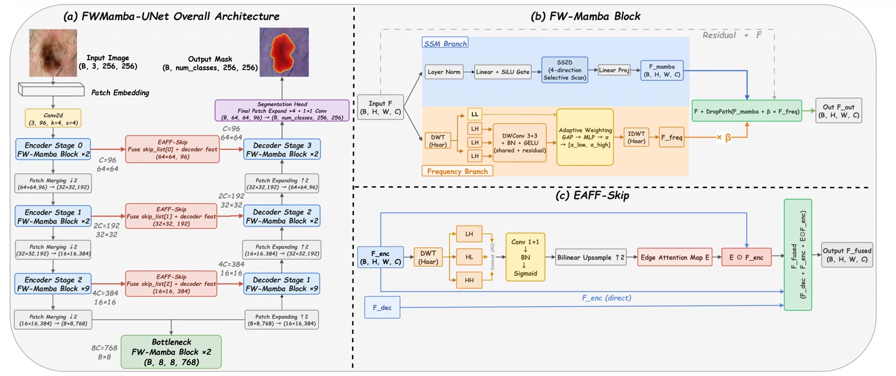
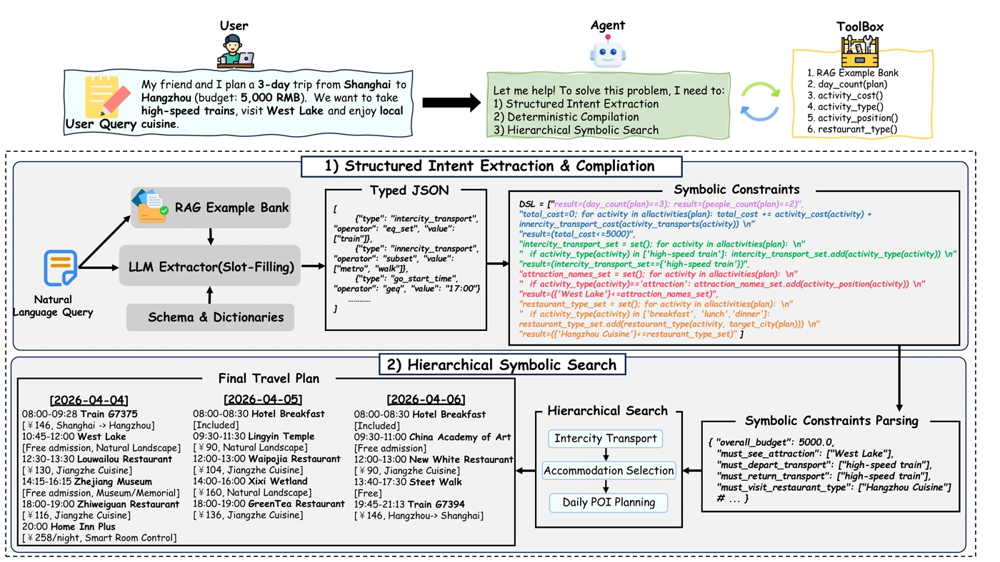
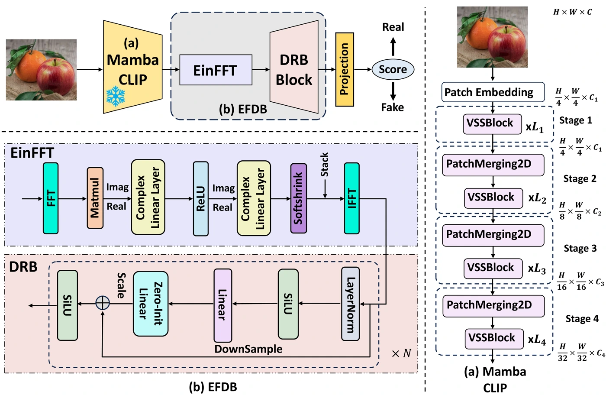
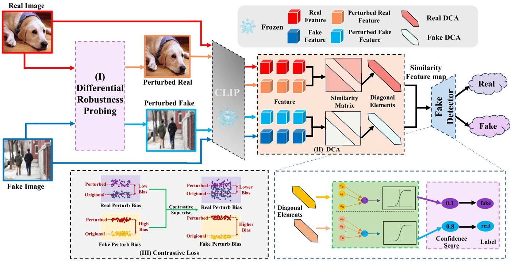

FWMamba-UNet: Frequency-Wavelet Enhanced Mamba UNet for Medical Image Segmentation
Combining state-space modeling with a wavelet branch to better capture fine structures in medical images.融合状态空间建模与小波分支，增强医学图像中的精细结构表征。
CURIOSITY, REASONING & SCIENTIFIC DISCOVERY保持好奇 · 可靠推理 · 科学探索
I am Zihao Guo (郭子豪), an undergraduate at Jiangnan University. My work spans state-space models, neuro-symbolic planning, and machine learning for scientific applications.我是郭子豪，目前就读于江南大学。已有研究涵盖状态空间模型、神经符号规划，以及面向科学应用的机器学习。
I have been admitted to the direct-entry PhD program at the University of Science and Technology of China (USTC), in the School of Artificial Intelligence and Data Science, with expected entry in September 2027. My prospective interests include large language models and agents for scientific computing; my future research focus is still taking shape.我已获中国科学技术大学人工智能与数据科学学院直博录取，预计 2027 年 9 月入学。未来拟探索大语言模型（LLM）与面向科学计算的智能体（Agent）等方向，具体研究主题仍在逐步明确。
Interested in reliable reasoning or AI for Science? Let’s connect ↗欢迎就可靠推理、AI for Science 等方向交流合作。联系我 ↗
Admitted to the direct-entry PhD program at USTC (AIDS). Looking ahead to research in LLMs and agents for scientific computing.已获中国科学技术大学人工智能与数据科学学院直博录取，预计 2027 年 9 月入学，未来拟探索大语言模型与面向科学计算的智能体。
Two first-author papers accepted as Oral presentations at ICIC 2026; RA-Det accepted to ICML 2026.两篇第一作者论文获 ICIC 2026 Oral 录用；RA-Det 获 ICML 2026 录用。
iGEM Gold Medal as dry-lab lead; MambaGuard published at PRCV 2025.作为干实验负责人获 iGEM 国际金奖；MambaGuard 发表于 PRCV 2025。

Combining state-space modeling with a wavelet branch to better capture fine structures in medical images.融合状态空间建模与小波分支，增强医学图像中的精细结构表征。

Separating language-based requirement extraction from deterministic constraint solving for reliable planning.将语言模型的需求抽取与确定性约束求解分离，实现可靠规划。

Combining visual representations and spectral features to detect images from unseen generators.结合视觉表征与频谱特征，检测来自未知生成模型的图像。

Using different responses to perturbations as a transferable signal for AI-generated image detection.利用真实与生成图像对扰动的响应差异，构建可迁移的生成图像检测信号。
De novo antimicrobial peptide design抗菌肽从头设计
As dry-lab lead, I independently built a peptide-design platform connecting protein language models, a variational autoencoder, and latent diffusion. Generated candidates were screened with an activity predictor and evaluated through wet-lab experiments.作为干实验负责人，我独立搭建抗菌肽设计平台，连接蛋白质语言模型、变分自编码器与潜在扩散模型，结合活性预测器筛选候选序列，并通过湿实验验证。
Multiple generated variants showed greater antimicrobial activity than the original sequence in wet-lab validation.多条生成变体在湿实验验证中表现出优于原始序列的抗菌活性。
Prospective research interests, building on my previous work. These are directions to explore, rather than completed results.基于已有工作的未来研究兴趣。以下内容属于探索方向，并非已完成成果。
How can language models reason reliably, use scientific tools, and support verifiable computational workflows?如何让语言模型可靠推理、使用科学工具，并支持可验证的计算流程？
Building on neuro-symbolic planning基于神经符号规划的研究积累How can structured models capture long-range interactions and help solve scientific problems efficiently?如何利用具有结构先验的模型刻画长程相互作用，并高效求解科学问题？
Building on state-space modeling基于状态空间建模的研究积累Earlier exploratory plans include EuclideanMamba for long-range atomistic modeling and Verified Repair Contracts (VRC) for evidence-aware scientific tool use. Their scope may evolve as my PhD research direction develops.此前的探索构想包括面向原子体系长程建模的 EuclideanMamba，以及面向科学工具调用验证的 Verified Repair Contracts（VRC）。这些构想可能随博士阶段研究方向的确定而调整。
Direct-entry PhD · Admitted
School of Artificial Intelligence and Data Science直博 · 已录取
人工智能与数据科学学院
Undergraduate studies · In progress
School of Artificial Intelligence and Computer Science本科 · 在读
人工智能与计算机学院
Founder and team lead of the “AI Qicheng” Coding Outreach Team, bringing coding-literacy classes to more than 600 primary-school students in underserved areas of Shandong.“AI 启程”编程支教团队创始人及负责人，为山东欠发达地区的 600 余名小学生开展编程启蒙课程。